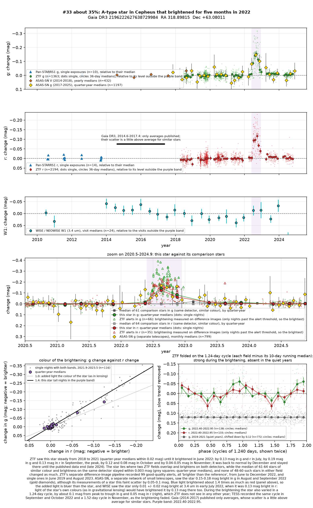
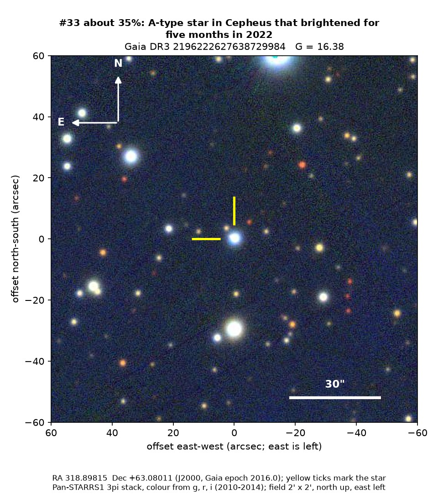
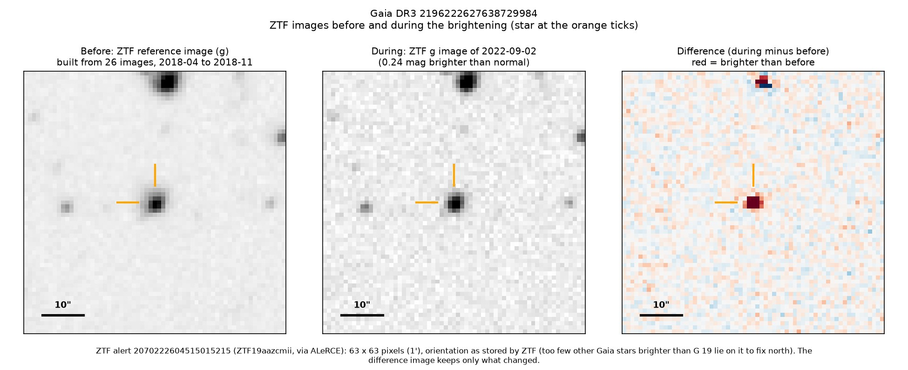
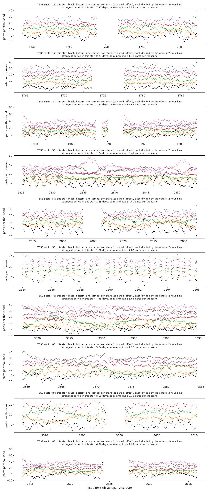

Professor of Mathematics
Paata Ivanisvili
Department of Mathematics, University of California, Irvine

Candidate 33: a hot star that brightened for five months
Why this estimate. The brightening is real: ZTF recorded it on two of its detectors, flagged it 99 times and saw the star alone change while its neighbours stayed steady, and ASAS-SN, a separate network of small telescopes, saw it too. What it was is unclear. The added light was bluer than the star, it came with a 1.24-day cycle that NASA’s TESS space telescope also recorded, and the infrared hardly changed, which rules out a gravitational lens. A faint unseen star very close to it may be what flared.
How to read the pictures. The finder chart shows a patch of sky two arcminutes across, about a fifteenth of the Moon’s width, with north up and east to the left. The star sits between the two yellow ticks, and the white bar is 30 arcseconds long. On a light curve the vertical axis is magnitude, a brightness scale on which larger numbers mean fainter stars, and it is drawn so that down means fainter. Purple shading marks the brightening. Each survey uses slightly different filters, so each is compared with its own normal level. The ZTF pictures show ZTF’s reference image of the star, an image taken during the brightening, and the difference between the two, in which only what changed remains: blue means fainter and red brighter. On the TESS light curves the star is black and the comparison stars are coloured.

What changed. The star is a hot white star of type A, about 7,700 K and roughly 300 million years old, some 2,400 parsecs away behind a thick layer of dust in Cepheus. ZTF saw it steady, within about 0.02 magnitudes, from 2018 to 2021. In June 2022 it began to brighten, reached 0.19 magnitudes brighter in green light and 0.13 in red light in September, about 19 per cent more light, and was back to normal by December. While it was bright, ZTF also caught it rising and falling every 1.24 days, by about a tenth of a magnitude in green light, which it does in no other year. TESS recorded the same cycle in September and October 2022, and a 1.52-day cycle in November, as the brightening faded.
Why it might matter. Stars of this kind do not usually brighten by a fifth for months. The light that was added is bluer than the star itself, as if it came from something hotter than about 10,000 K, and at 3.4 microns WISE saw almost no change in July 2022, when the star was 0.13 magnitudes brighter in red light. A gravitational lens would have brightened every colour by the same factor, so that is ruled out. A hot companion or a faint neighbour that flared, or a burst of activity on the star itself, could fit, but none is established. An unseen star within 0.4 arcseconds cannot be excluded, and if one is there it may be the source.
No record of the brightening could be found. The star is not in SIMBAD, VSX (the variable-star index), Gaia’s variable-star lists or the other catalogues consulted, nor among the dimming stars of Tzanidakis et al. (2025), and there is no Transient Name Server entry, Gaia alert or paper giving its Gaia number. ZTF’s alert system holds only machine-generated classifications for it.
- Star
- Gaia DR3 2196222627638729984, a hot A-type star
- Location
- RA 318.89815°, Dec +63.08011° (J2000), in Cepheus
- Distance
- about 2,400 parsecs (7,800 light-years)
- Brightness
- Gaia G = 16.4, far too faint for the eye
- Probability
- This candidate is unconfirmed. The percentage under the title is an estimate of the chance that it is a real, previously unrecorded case of the kind described. The estimate has not been checked by outside experts. See the introduction to all fifty-eight candidates.
- Caveat
- The cause is unknown. ASAS-SN sees the star near its faint limit, so its support is noisy. Two faint Gaia neighbours lie close to the star, one of them only 1.4 arcseconds away, and an even closer unseen star cannot be excluded. There is no spectrum.


